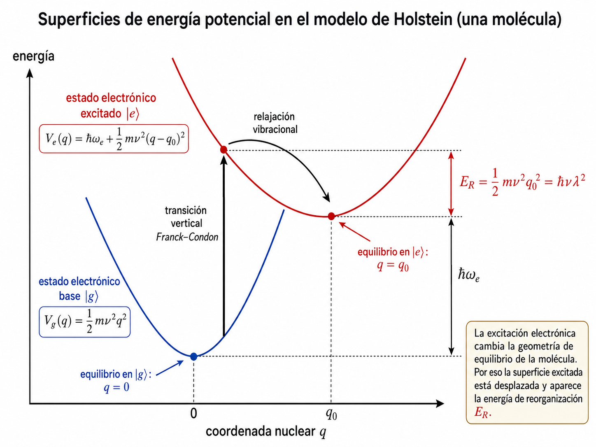

Modelo de Holstein-Cummings
- Idea física
- Superficies de energía potencial
- Hamiltoniano molecular de Holstein
- Acoplamiento con la cavidad
- Aproximaciones físicas
- Coordenada efectiva y modos vibracionales
- Número de excitaciones conservado
- Bloques electrón-fotón
- Desplazamiento vibracional del bloque
- Base polaritónica
- JCP efectivo polaritón-fonón
- Diagonalización de dobletes
- Sectores del modelo
- Validez del modelo efectivo
- Valores esperados
- Conexión con la tesis
1. Idea física
El modelo de Holstein-Cummings describe una molécula con tres grados de libertad relevantes: una transición electrónica efectiva de dos niveles, un modo vibracional intramolecular y un modo cuantizado de cavidad. La idea central es que la excitación electrónica no solo cambia la energía interna de la molécula. También cambia la distribución electrónica y, por eso, cambia la superficie de energía potencial que sienten los núcleos.
En el estado electrónico base $\ket{g}$, la geometría nuclear de equilibrio se toma como origen de una coordenada efectiva $q$. En el estado excitado $\ket{e}$, la superficie sigue siendo aproximadamente armónica, pero su mínimo está desplazado. Este desplazamiento produce el acoplamiento de Holstein: el estado electrónico decide cuál es la posición de equilibrio del oscilador vibracional.
Para la tesis, este modelo es el punto de partida porque muestra cómo pasar de una molécula aislada a una estructura por bloques que puede diagonalizarse. La extensión a dos moléculas mantiene la misma lógica, pero el espacio de Hilbert crece y aparecen sectores donde la cavidad puede mediar correlaciones entre moléculas distintas.
2. Superficies de energía potencial
Se aproxima la vibración nuclear por un oscilador armónico con masa efectiva $m$ y frecuencia vibracional $\nu$. Si la molécula está en el estado electrónico base, se elige el mínimo en $q=0$:
$$V_g(q)=\frac{1}{2}m\nu^2q^2.$$La coordenada $q$ mide la deformación respecto de la geometría de equilibrio. Para una molécula diatómica puede tomarse como $q=R-R_g$, donde $R$ es la distancia internuclear y $R_g$ la distancia de equilibrio en el estado base. Si $q>0$, la molécula está elongada; si $q<0$, está comprimida respecto de esa geometría.
En el estado electrónico excitado, la energía electrónica aumenta en $\hbar\omega$ y el mínimo vibracional se desplaza a $q=q_0$:
$$V_e(q)=\hbar\omega+\frac{1}{2}m\nu^2(q-q_0)^2.$$Si $q_0=0$, excitar la molécula no cambia su geometría de equilibrio y no aparece acoplamiento electrónico-vibracional. Si $q_0\neq0$, la excitación electrónica crea una fuerza efectiva sobre la coordenada nuclear.

La energía de reorganización se obtiene comparando la energía de la superficie excitada en $q=0$ con la energía en su mínimo $q=q_0$:
$$V_e(0)=\hbar\omega+\frac{1}{2}m\nu^2q_0^2,\qquad V_e(q_0)=\hbar\omega,$$Esta energía responde a una pregunta física concreta: después de excitar electrónicamente la molécula sin mover los núcleos todavía, ¿cuánta energía puede liberar la molécula al relajar su geometría desde $q=0$ hasta $q=q_0$? Si $q_0$ es grande, la excitación deforma mucho la molécula y $E_R$ es grande. Si $q_0=0$, ambas superficies tienen el mismo mínimo y $E_R=0$.
La cantidad $\hbar\omega$ es la diferencia de energía entre mínimos. La absorción vertical de Franck-Condon desde $q=0$ hasta $q=0$ en la superficie excitada cuesta
$$V_e(0)-V_g(0)=\hbar\omega+E_R.$$Por eso la frecuencia efectiva de la transición vertical se escribirá como
una vez que se introduzca el parámetro adimensional de Huang-Rhys $\lambda$.
3. Hamiltoniano molecular de Holstein
Para una molécula aislada, el espacio de Hilbert se separa como
$$\mathcal H_{\text{mol}}=\mathcal H_{\text{el}}\otimes\mathcal H_{\text{vib}},$$donde $\mathcal H_{\text{el}}$ está generado por $\{\ket{g},\ket{e}\}$ y $\mathcal H_{\text{vib}}$ por los estados de número vibracionales $\{\ket{m}_v\}_{m=0}^{\infty}$. Se definen los operadores electrónicos
$$\hat\sigma^\dagger=\ket{e}\bra{g},\qquad \hat\sigma=\ket{g}\bra{e},\qquad \hat\sigma^\dagger\hat\sigma=\ket{e}\bra{e}.$$Tomando la energía electrónica del estado base como cero y la diferencia entre mínimos como $\hbar\omega$, el hamiltoniano electrónico aislado es
$$\hat H_{\text{el}}=\hbar\omega\,\ket{e}\bra{e} =\hbar\omega\,\hat\sigma^\dagger\hat\sigma.$$Al añadir la vibración nuclear, el hamiltoniano vibracional condicionado al estado electrónico es
$$\hat H_{\text{vib}}= \left[\frac{\hat p^2}{2m}+\frac{1}{2}m\nu^2\hat q^2\right]\ket{g}\bra{g} + \left[\frac{\hat p^2}{2m}+\frac{1}{2}m\nu^2(\hat q-q_0)^2\right]\ket{e}\bra{e}.$$Sumando la parte electrónica,
$$\hat H_{\text{mol}}= \left[\frac{\hat p^2}{2m}+\frac{1}{2}m\nu^2\hat q^2\right]\ket{g}\bra{g} + \left[\hbar\omega+\frac{\hat p^2}{2m}+\frac{1}{2}m\nu^2(\hat q-q_0)^2\right]\ket{e}\bra{e}.$$Al expandir $(\hat q-q_0)^2=\hat q^2+q_0^2-2q_0\hat q$ se obtiene
$$\hat H_{\text{mol}}= \left(\frac{\hat p^2}{2m}+\frac{1}{2}m\nu^2\hat q^2\right)\mathbf{1}_{\text{el}} +\hbar\omega\,\hat\sigma^\dagger\hat\sigma -m\nu^2q_0\hat q\,\hat\sigma^\dagger\hat\sigma +\frac{1}{2}m\nu^2q_0^2\,\hat\sigma^\dagger\hat\sigma.$$Los términos tienen una lectura directa. El primero es la vibración armónica común. El segundo es la energía electrónica. El tercero dice que cuando la molécula está excitada aparece una fuerza que desplaza la coordenada nuclear. El último es una constante energética asociada solo a la superficie excitada.
Se cuantiza el oscilador vibracional con operadores bosónicos $\hat b$ y $\hat b^\dagger$ que satisfacen
$$[\hat b,\hat b^\dagger]=1,\qquad \hat b^\dagger\ket{m}_v=\sqrt{m+1}\ket{m+1}_v,\qquad \hat b\ket{m}_v=\sqrt{m}\ket{m-1}_v.$$Las variables canónicas se escriben como
$$\hat q=\sqrt{\frac{\hbar}{2m\nu}}\left(\hat b^\dagger+\hat b\right),\qquad \hat p=i\sqrt{\frac{\hbar m\nu}{2}}\left(\hat b^\dagger-\hat b\right).$$Sustituyendo estas expresiones,
$$\frac{\hat p^2}{2m}+\frac{1}{2}m\nu^2\hat q^2 =\hbar\nu\left(\hat b^\dagger\hat b+\frac{1}{2}\right).$$La energía de punto cero $\hbar\nu/2$ es constante y se descarta porque no afecta la dinámica.
El término lineal se convierte en
$$-m\nu^2q_0\hat q\,\hat\sigma^\dagger\hat\sigma = -m\nu^2q_0\sqrt{\frac{\hbar}{2m\nu}} \left(\hat b^\dagger+\hat b\right)\hat\sigma^\dagger\hat\sigma.$$Se introduce el parámetro adimensional de Huang-Rhys:
Con esta definición,
$$m\nu^2q_0\sqrt{\frac{\hbar}{2m\nu}}=\hbar\nu\lambda,$$y el término de Holstein queda
$$-\hbar\nu\lambda(\hat b^\dagger+\hat b)\hat\sigma^\dagger\hat\sigma.$$Además,
$$\frac{1}{2}m\nu^2q_0^2=\hbar\nu\lambda^2,$$por lo que $E_R=\hbar\nu\lambda^2$. El hamiltoniano molecular toma la forma
4. Acoplamiento con la cavidad
Para llegar al modelo de Holstein-Cummings se añade un modo cuantizado de cavidad. El espacio total es
$$\mathcal H=\mathcal H_{\text{cav}}\otimes\mathcal H_{\text{el}}\otimes\mathcal H_{\text{vib}},$$con base natural
$$\ket{n}_c\otimes\ket{\alpha}\otimes\ket{m}_v,\qquad \alpha\in\{g,e\}.$$El hamiltoniano libre de cavidad, después de quitar su energía de punto cero, es
$$\hat H_{\text{cav}}=\hbar\Omega\,\hat a^\dagger\hat a,$$donde $\Omega$ es la frecuencia del modo de cavidad y $[\hat a,\hat a^\dagger]=1$. Si hay $n$ fotones, $\hat a^\dagger\hat a\ket{n}_c=n\ket{n}_c$, y la energía fotónica es $\hbar\Omega n$.
La molécula se acopla al campo mediante el momento dipolar de la transición electrónica. Aplicando la aproximación dipolar y la aproximación de onda rotante al acoplamiento $-\hat{\mathbf d}\cdot\hat{\mathbf E}$, queda el término análogo al de Jaynes-Cummings:
$$\hat H_{\text{int}}=\hbar g\left(\hat\sigma^\dagger\hat a+\hat\sigma\hat a^\dagger\right).$$Así, el hamiltoniano de Holstein-Cummings para una sola molécula es
Este modelo acopla la transición electrónica molecular con la vibración y con la cavidad. No incluye un acoplamiento directo cavidad-vibración. Un término de ese tipo tendría la forma
$$\hat H_{\text{cav-vib}}=\hbar\eta(\hat a+\hat a^\dagger)(\hat b+\hat b^\dagger) \simeq \hbar\eta(\hat a\hat b^\dagger+\hat a^\dagger\hat b),$$después de una RWA apropiada. Físicamente no aparece porque la frecuencia electrónica efectiva $\omega_0$ suele estar en el visible o ultravioleta, mientras que la frecuencia vibracional $\nu$ suele estar en el infrarrojo. Un único modo de cavidad con frecuencia $\Omega$ no puede estar simultáneamente en resonancia con $\omega_0$ y con $\nu$ en moléculas reales.
Si se pidiera $\Omega\simeq\omega_0\simeq\nu$, entonces
$$\omega+\nu\lambda^2\simeq\nu \quad\Rightarrow\quad \lambda\simeq\sqrt{1-\frac{\omega}{\nu}}.$$Para que $\lambda$ sea real se requeriría $\omega<\nu$, pero usualmente $\omega\gg\nu$. Por eso no hay un parámetro real que haga resonantes, al mismo tiempo, los tres subsistemas.
5. Aproximaciones físicas
La construcción anterior usa varias aproximaciones:
- Born-Oppenheimer. Las superficies electrónicas dependen de las coordenadas nucleares porque los núcleos son mucho más pesados que los electrones. La dinámica electrónica se ajusta mucho más rápido que la nuclear.
- Aproximación armónica. Cerca de cada mínimo, las superficies de energía potencial se aproximan por parábolas.
- Dos niveles electrónicos efectivos. Aunque una molécula real tiene muchos estados electrónicos, se retiene una transición dominante $\ket{g}\leftrightarrow\ket{e}$.
- Aproximación dipolar y RWA óptica. El acoplamiento con la cavidad se reduce a $\hbar g(\hat\sigma^\dagger\hat a+\hat\sigma\hat a^\dagger)$.
6. Coordenada efectiva y modos vibracionales
Para una molécula de $N_a$ átomos hay $3N_a$ coordenadas nucleares. Si la molécula no es lineal, tres corresponden a traslaciones globales y tres a rotaciones. Esas seis coordenadas no cambian la geometría interna, solo mueven o giran la molécula completa. Por eso quedan $3N_a-6$ modos vibracionales internos. Para una molécula lineal quedan $3N_a-5$, porque una rotación alrededor del eje molecular no cambia la configuración.
En principio las superficies dependen de todas las coordenadas normales,
$$V=V(Q_1,Q_2,\ldots,Q_{3N_a-6}).$$Si el proceso relevante ocurre principalmente a lo largo de una dirección, se introduce una coordenada de reacción efectiva
$$q=c_1Q_1+c_2Q_2+\cdots+c_{3N_a-6}Q_{3N_a-6}.$$Esta coordenada representa la combinación de desplazamientos nucleares que más se acopla a la transición electrónica. Para una molécula diatómica, puede coincidir con la distancia internuclear.
7. Número de excitaciones conservado
Comparando con Jaynes-Cummings,
$$\hat H_{\text{JC}}= \hbar\Omega\hat a^\dagger\hat a +\frac{1}{2}\hbar\omega\,\hat\sigma_z +\hbar g(\hat\sigma^\dagger\hat a+\hat\sigma\hat a^\dagger),$$se observa que el HC contiene el mismo intercambio resonante electrón-fotón, pero añade el modo vibracional y el acoplamiento de Holstein. Por eso se pregunta si el número de excitaciones ópticas
$$\hat N=\hat a^\dagger\hat a+\hat\sigma^\dagger\hat\sigma$$sigue siendo constante de movimiento. El término vibracional $\hbar\nu\hat b^\dagger\hat b$ conmuta con $\hat N$ porque actúa en otro espacio de Hilbert. El término de Holstein también conmuta con $\hat N$: contiene $\hat b^\dagger+\hat b$, que solo cambia fonones, y $\hat\sigma^\dagger\hat\sigma$, que proyecta sobre el estado excitado pero no cambia el número de excitaciones electrónicas.
Los fonones no entran en $\hat N$ porque cambian el desplazamiento vibracional, pero no crean ni destruyen excitaciones electrónicas ni fotones. Esta conservación permite dividir el hamiltoniano en bloques de excitación electrónica-fotónica fija.
8. Bloques electrón-fotón
Para $n\geq1$ excitaciones ópticas, los estados electrón-fotón relevantes son
$$\ket{e,n-1},\qquad \ket{g,n},$$porque ambos tienen el mismo valor de $\hat N$: el primero tiene una excitación electrónica y $n-1$ fotones, mientras que el segundo tiene cero excitaciones electrónicas y $n$ fotones. El hamiltoniano no mezcla este bloque con otro valor de $n$.
Se calcula la matriz de bloque en la base ordenada $\{\ket{e,n-1},\ket{g,n}\}$, dejando los operadores vibracionales $\hat b,\hat b^\dagger$ sin diagonalizar. Los elementos diagonales son
$$\bra{e,n-1}\hat H_{\text{HC}}\ket{e,n-1} = \hbar\left[\Omega(n-1)+\omega_0+\nu\hat b^\dagger\hat b -\nu\lambda(\hat b^\dagger+\hat b)\right],$$ $$\bra{g,n}\hat H_{\text{HC}}\ket{g,n} = \hbar\left[\Omega n+\nu\hat b^\dagger\hat b\right].$$La diferencia aparece porque solo la rama excitada $\ket{e,n-1}$ siente el desplazamiento de Holstein. Los términos fuera de la diagonal provienen del acoplamiento Cummings:
$$\bra{e,n-1}\hat H_{\text{HC}}\ket{g,n} = \bra{g,n}\hat H_{\text{HC}}\ket{e,n-1} = \hbar g\sqrt n.$$Por tanto,
$$\hat H_{\text{HC}}^{(n)} = \hbar \begin{pmatrix} \Omega(n-1)+\omega_0+\nu\hat b^\dagger\hat b-\nu\lambda(\hat b^\dagger+\hat b) & g\sqrt n\\ g\sqrt n & \Omega n+\nu\hat b^\dagger\hat b \end{pmatrix}.$$Factorizando $\Omega n+\nu\hat b^\dagger\hat b$, común a la diagonal, y definiendo
$$\Delta=\omega_0-\Omega,$$se obtiene
Esta forma todavía no es la forma simétrica típica de un modelo de Rabi, porque el acoplamiento vibracional aparece solo en la entrada superior.
9. Desplazamiento vibracional del bloque
Para manipular el bloque se introducen operadores auxiliares que actúan dentro del subespacio $\{\ket{e,n-1},\ket{g,n}\}$:
$$\hat\tau^{(n)\dagger}=\ket{e,n-1}\bra{g,n},\qquad \hat\tau^{(n)}=\ket{g,n}\bra{e,n-1},$$ $$\hat\tau_z^{(n)}=\ket{e,n-1}\bra{e,n-1}-\ket{g,n}\bra{g,n},\qquad \hat\tau_x^{(n)}=\hat\tau^{(n)\dagger}+\hat\tau^{(n)}.$$Estos operadores de subida y bajada no son los operadores electrónicos físicos $\hat\sigma^\dagger$ y $\hat\sigma$. Cambian simultáneamente el estado electrónico y el número de fotones para permanecer dentro del bloque $n$.
El proyector sobre la rama excitada del bloque es
$$\hat P_e^{(n)}=\ket{e,n-1}\bra{e,n-1} =\frac{\mathbf{1}_{2\times2}+\hat\tau_z^{(n)}}{2}.$$Con esto,
$$\hat H_{\text{HC}}^{(n)} = \hbar\left(\Omega n+\nu\hat b^\dagger\hat b\right)\mathbf{1} +\hbar\left[\Delta-\nu\lambda(\hat b^\dagger+\hat b)\right]\hat P_e^{(n)} +\hbar g\sqrt n\,\hat\tau_x^{(n)}.$$Sustituyendo $\hat P_e^{(n)}$,
$$\hat H_{\text{HC}}^{(n)} = \hbar\left[\Omega n+\nu\hat b^\dagger\hat b +\frac{\Delta}{2} -\frac{\nu\lambda}{2}(\hat b+\hat b^\dagger)\right]\mathbf{1} +\frac{\hbar}{2}\left[\Delta-\nu\lambda(\hat b+\hat b^\dagger)\right]\hat\tau_z^{(n)} +\hbar g\sqrt n\,\hat\tau_x^{(n)}.$$El término lineal proporcional a $\hat b+\hat b^\dagger$ en la parte identidad representa una fuerza uniforme sobre el oscilador vibracional. Se elimina desplazando el origen del oscilador en el espacio de fase con
$$\hat D(\alpha)=e^{\alpha\hat b^\dagger-\alpha^*\hat b}.$$Para $\alpha$ real,
$$\hat D^\dagger(\alpha)\hat b\,\hat D(\alpha)=\hat b+\alpha,\qquad \hat D^\dagger(\alpha)\hat b^\dagger\hat D(\alpha)=\hat b^\dagger+\alpha.$$Con $\alpha=\lambda/2$ se define
$$\tilde H_{\text{HC}}^{(n)}= \hat D^\dagger\!\left(\frac{\lambda}{2}\right) \hat H_{\text{HC}}^{(n)} \hat D\!\left(\frac{\lambda}{2}\right).$$Esto equivale a sustituir $\hat b\to\hat b+\lambda/2$ y $\hat b^\dagger\to\hat b^\dagger+\lambda/2$. Al hacerlo,
$$\nu\left(\hat b^\dagger+\frac{\lambda}{2}\right) \left(\hat b+\frac{\lambda}{2}\right) -\frac{\nu\lambda}{2}\left(\hat b+\hat b^\dagger+\lambda\right) = \nu\hat b^\dagger\hat b-\frac{\nu\lambda^2}{4}.$$Por tanto,
$$\tilde H_{\text{HC}}^{(n)} = \hbar\left[\Omega n+\nu\hat b^\dagger\hat b +\frac{\Delta}{2}-\frac{\nu\lambda^2}{4}\right]\mathbf{1} +\frac{\hbar}{2}\left[\Delta-\nu\lambda^2-\nu\lambda(\hat b+\hat b^\dagger)\right]\hat\tau_z^{(n)} +\hbar g\sqrt n\,\hat\tau_x^{(n)}.$$Se impone la condición
$$\Delta=\nu\lambda^2.$$Como $\Delta=\omega_0-\Omega$ y $\omega_0=\omega+\nu\lambda^2$, esta condición implica
$$\omega+\nu\lambda^2-\Omega=\nu\lambda^2 \quad\Rightarrow\quad \Omega=\omega.$$Es decir, la cavidad queda sintonizada con la transición electrónica natural entre mínimos, no con la transición vertical $\omega_0$. Con esta elección,
10. Base polaritónica
El término Cummings que falta por diagonalizar es proporcional a $\hat\tau_x^{(n)}$. Sus eigenestados son las combinaciones simétrica y antisimétrica:
Estos son los polaritones del bloque resonante: ya no son molécula excitada con $n-1$ fotones o molécula base con $n$ fotones por separado, sino superposiciones coherentes de ambas posibilidades. En resonancia, cada polaritón tiene mitad carácter material y mitad carácter fotónico.
En esta base se definen operadores de subida y bajada polaritónicos:
$$\hat S^{(n)\dagger}=\ket{+,n}\bra{-,n},\qquad \hat S^{(n)}=\ket{-,n}\bra{+,n},$$ $$\hat S_z^{(n)}=\hat S^{(n)\dagger}\hat S^{(n)}-\hat S^{(n)}\hat S^{(n)\dagger},\qquad \hat S_x^{(n)}=\hat S^{(n)\dagger}+\hat S^{(n)}.$$Una cuenta directa da
$$\hat S_z^{(n)}=\hat\tau_x^{(n)},\qquad \hat S_x^{(n)}=\hat\tau_z^{(n)}.$$Por eso el hamiltoniano desplazado se reescribe como
En esta forma, cada bloque corresponde a un modelo de Rabi cuántico donde el sistema de dos niveles efectivo no es la molécula desnuda, sino el doblete polaritónico $\{\ket{+,n},\ket{-,n}\}$. El modo bosónico que se acopla a ese pseudoespín no es la cavidad, sino la vibración molecular.
11. JCP efectivo polaritón-fonón
El acoplamiento polaritón-vibración se expande como
$$(\hat b+\hat b^\dagger)\hat S_x^{(n)} = \hat b\hat S^{(n)\dagger} +\hat b^\dagger\hat S^{(n)} +\hat b\hat S^{(n)} +\hat b^\dagger\hat S^{(n)\dagger}.$$Los primeros dos términos conservan energía cerca de la resonancia polaritón-fonón: $\hat b\hat S^{(n)\dagger}$ destruye un fonón y sube el polaritón, mientras que $\hat b^\dagger\hat S^{(n)}$ crea un fonón y baja el polaritón. Los otros dos términos son contra-rotantes: bajan ambos subsistemas o suben ambos subsistemas simultáneamente.
Aplicando una RWA análoga a la de Jaynes-Cummings se obtiene
Este hamiltoniano es del tipo Jaynes-Cummings-Paul, pero ahora el modo bosónico es el fonón y el pseudoátomo es el doblete polaritónico.
La constante de movimiento del hamiltoniano efectivo es el número polaritón-fonón
Esto ocurre porque $\hat b\hat S^{(n)\dagger}$ destruye un fonón y sube el polaritón, mientras que $\hat b^\dagger\hat S^{(n)}$ crea un fonón y baja el polaritón. En ambos casos, la suma total se conserva.
12. Diagonalización de dobletes
Para $m>0$, la base relevante con número $\hat M^{(n)}=m$ es
$$\ket{+,n,m-1},\qquad \ket{-,n,m}.$$El primer estado tiene $m-1$ fonones y una excitación polaritónica superior. El segundo tiene $m$ fonones y el polaritón inferior. Ambos tienen el mismo valor de $\hat M^{(n)}$.
Se usan las acciones
$$\hat S_z^{(n)}\ket{+,n,m}=+\ket{+,n,m},\qquad \hat S_z^{(n)}\ket{-,n,m}=-\ket{-,n,m},$$ $$\hat S^{(n)\dagger}\ket{-,n,m}=\ket{+,n,m},\qquad \hat S^{(n)}\ket{+,n,m}=\ket{-,n,m},$$ $$\hat b^\dagger\ket{\pm,n,m}=\sqrt{m+1}\ket{\pm,n,m+1},\qquad \hat b\ket{\pm,n,m}=\sqrt m\,\ket{\pm,n,m-1}.$$Los elementos diagonales son
$$\bra{+,n,m-1}\tilde H_{\text{ef}}^{(n)}\ket{+,n,m-1} = \hbar\left[\Omega n+\frac{\nu\lambda^2}{4}+\nu(m-1)+g\sqrt n\right],$$ $$\bra{-,n,m}\tilde H_{\text{ef}}^{(n)}\ket{-,n,m} = \hbar\left[\Omega n+\frac{\nu\lambda^2}{4}+\nu m-g\sqrt n\right].$$Los términos fuera de la diagonal provienen de $-\hbar\nu\lambda(\hat b\hat S^\dagger+\hat b^\dagger\hat S)/2$:
$$\bra{+,n,m-1}\tilde H_{\text{ef}}^{(n)}\ket{-,n,m} = \bra{-,n,m}\tilde H_{\text{ef}}^{(n)}\ket{+,n,m-1} = -\frac{\hbar\nu\lambda}{2}\sqrt m.$$Así, en la base ordenada $\{\ket{+,n,m-1},\ket{-,n,m}\}$,
$$\tilde H_{\text{ef}}^{(n,m)} = \hbar \begin{pmatrix} \Omega n+\frac{\nu\lambda^2}{4}+\nu(m-1)+g\sqrt n & -\frac{\nu\lambda}{2}\sqrt m\\ -\frac{\nu\lambda}{2}\sqrt m & \Omega n+\frac{\nu\lambda^2}{4}+\nu m-g\sqrt n \end{pmatrix}.$$El promedio de la diagonal es
$$A_{nm}=\Omega n+\frac{\nu\lambda^2}{4}+\nu\left(m-\frac{1}{2}\right),$$y la diferencia entre las dos entradas diagonales es
$$2g\sqrt n-\nu.$$Se define la desintonización polaritón-fonón
$$\delta_n=2g\sqrt n-\nu.$$Entonces
La resonancia efectiva ocurre cuando
$$\delta_n=0\quad\Rightarrow\quad \nu=2g\sqrt n,$$es decir, cuando la separación entre los polaritones del bloque $n$ coincide con la frecuencia vibracional.
Para simplificar la diagonalización se define
$$k_m=\nu\lambda\sqrt m.$$Entonces el hamiltoniano del doblete puede escribirse como
$$\tilde H_{\text{ef}}^{(n,m)} = \hbar A_{nm}\mathbf{1}_{2\times2} + \frac{\hbar}{2} \begin{pmatrix} \delta_n & -k_m\\ -k_m & -\delta_n \end{pmatrix}.$$El primer término suma la misma energía a los dos estados del doblete. Al ser proporcional a la identidad, desplaza los eigenvalores pero no modifica los eigenvectores. Por eso basta con diagonalizar la matriz del segundo término.
Para diagonalizar la parte no trivial se resuelve
$$\det \begin{pmatrix} \delta_n-\epsilon & -k_m\\ -k_m & -\delta_n-\epsilon \end{pmatrix}=0.$$Esto da
$$-(\delta_n^2-\epsilon^2)-k_m^2=0 \quad\Rightarrow\quad \epsilon^2=\delta_n^2+k_m^2.$$Se define la frecuencia de Rabi efectiva del doblete $(n,m)$:
Los eigenvalores son
Para obtener los eigenvectores se trabaja con la parte no trivial
$$M_{nm}= \begin{pmatrix} \delta_n & -k_m\\ -k_m & -\delta_n \end{pmatrix},$$porque el término $\hbar A_{nm}\mathbf{1}_{2\times2}$ solo desplaza la energía. En la base ordenada $\{\ket{+,n,m-1},\ket{-,n,m}\}$, un vector arbitrario se escribe como
$$\ket{u}=u\ket{+,n,m-1}+v\ket{-,n,m} \quad\Longleftrightarrow\quad \begin{pmatrix}u\\v\end{pmatrix}.$$Primero se toma el eigenvalor positivo de $M_{nm}$, $\epsilon=+\Omega_{nm}^{\text{ef}}$. Entonces
$$ \begin{pmatrix} \delta_n & -k_m\\ -k_m & -\delta_n \end{pmatrix} \begin{pmatrix}u\\v\end{pmatrix} = \Omega_{nm}^{\text{ef}} \begin{pmatrix}u\\v\end{pmatrix}. $$Multiplicando la matriz se obtiene el sistema
$$ u\delta_n-vk_m=\Omega_{nm}^{\text{ef}}u,\qquad -uk_m-v\delta_n=\Omega_{nm}^{\text{ef}}v. $$De la primera ecuación,
$$ -vk_m=(\Omega_{nm}^{\text{ef}}-\delta_n)u \quad\Rightarrow\quad -\frac{v}{u}= \frac{\Omega_{nm}^{\text{ef}}-\delta_n}{k_m}. $$Se elige entonces
$$u=C_{nm},\qquad v=-S_{nm},$$con lo cual
$$ \ket{E_{nm}^{+}} = C_{nm}\ket{+,n,m-1}-S_{nm}\ket{-,n,m}, \qquad \frac{S_{nm}}{C_{nm}}= \frac{\Omega_{nm}^{\text{ef}}-\delta_n}{k_m}. $$Para normalizar se impone $\braket{E_{nm}^{+}|E_{nm}^{+}}=1$. Como la base es ortonormal, resulta
$$C_{nm}^2+S_{nm}^2=1.$$Tomando $C_{nm},S_{nm}\in\mathbb{R}^{+}$ y definiendo $r=S_{nm}/C_{nm}$, se tiene
$$ C_{nm}^2+S_{nm}^2 = C_{nm}^2+C_{nm}^2r^2 = C_{nm}^2(1+r^2)=1, $$ $$ \Rightarrow\qquad C_{nm}^2=\frac{1}{1+r^2}. $$Además,
$$ (\Omega_{nm}^{\text{ef}})^2=\delta_n^2+k_m^2 \quad\Rightarrow\quad k_m^2=(\Omega_{nm}^{\text{ef}})^2-\delta_n^2 = (\Omega_{nm}^{\text{ef}}-\delta_n)(\Omega_{nm}^{\text{ef}}+\delta_n). $$Por tanto,
$$ r^2= \left(\frac{\Omega_{nm}^{\text{ef}}-\delta_n}{k_m}\right)^2 = \frac{\Omega_{nm}^{\text{ef}}-\delta_n} {\Omega_{nm}^{\text{ef}}+\delta_n}. $$Al sustituir este resultado en la normalización,
$$ C_{nm}^2= \frac{1}{1+\dfrac{\Omega_{nm}^{\text{ef}}-\delta_n} {\Omega_{nm}^{\text{ef}}+\delta_n}} = \frac{\Omega_{nm}^{\text{ef}}+\delta_n} {2\Omega_{nm}^{\text{ef}}}, $$ $$ S_{nm}^2=1-C_{nm}^2 = \frac{\Omega_{nm}^{\text{ef}}-\delta_n} {2\Omega_{nm}^{\text{ef}}}. $$Así,
$$ C_{nm}= \sqrt{\frac{\Omega_{nm}^{\text{ef}}+\delta_n} {2\Omega_{nm}^{\text{ef}}}}, \qquad S_{nm}= \sqrt{\frac{\Omega_{nm}^{\text{ef}}-\delta_n} {2\Omega_{nm}^{\text{ef}}}}. $$Para el eigenvalor negativo, $\epsilon=-\Omega_{nm}^{\text{ef}}$, se tiene
$$ \begin{pmatrix} \delta_n & -k_m\\ -k_m & -\delta_n \end{pmatrix} \begin{pmatrix}u\\v\end{pmatrix} = -\Omega_{nm}^{\text{ef}} \begin{pmatrix}u\\v\end{pmatrix}. $$De nuevo, al multiplicar la matriz,
$$ u\delta_n-vk_m=-\Omega_{nm}^{\text{ef}}u,\qquad -uk_m-v\delta_n=-\Omega_{nm}^{\text{ef}}v. $$De la segunda ecuación se obtiene
$$ uk_m=(\Omega_{nm}^{\text{ef}}-\delta_n)v \quad\Rightarrow\quad \frac{u}{v}= \frac{\Omega_{nm}^{\text{ef}}-\delta_n}{k_m}. $$Por eso se escoge
$$u=S_{nm},\qquad v=C_{nm},$$y el eigenvector negativo queda
$$ \ket{E_{nm}^{-}} = S_{nm}\ket{+,n,m-1}+C_{nm}\ket{-,n,m}. $$De esta forma los dos eigenvectores son ortogonales:
$$ \braket{E_{nm}^{+}|E_{nm}^{-}} = C_{nm}S_{nm}-S_{nm}C_{nm} = 0. $$Ahora se construye el ángulo de mezcla. Como
$$ (\Omega_{nm}^{\text{ef}})^2=\delta_n^2+k_m^2 \quad\Rightarrow\quad 1= \left(\frac{\delta_n}{\Omega_{nm}^{\text{ef}}}\right)^2 + \left(\frac{k_m}{\Omega_{nm}^{\text{ef}}}\right)^2, $$se puede definir
$$\cos\theta_{nm}=\frac{\delta_n}{\Omega_{nm}^{\text{ef}}}, \qquad \sin\theta_{nm}=\frac{k_m}{\Omega_{nm}^{\text{ef}}} = \frac{\nu\lambda\sqrt m}{\Omega_{nm}^{\text{ef}}}.$$Con estas dos relaciones se fija el cuadrante del ángulo. En particular, cuando la razón está bien definida,
$$\tan\theta_{nm}=\frac{k_m}{\delta_n}.$$Las identidades de medio ángulo dan
$$ \cos^2\left(\frac{\theta_{nm}}{2}\right) = \frac{1+\cos\theta_{nm}}{2} = \frac{1}{2}\left(1+\frac{\delta_n}{\Omega_{nm}^{\text{ef}}}\right) = \frac{\Omega_{nm}^{\text{ef}}+\delta_n} {2\Omega_{nm}^{\text{ef}}}, $$ $$ \sin^2\left(\frac{\theta_{nm}}{2}\right) = \frac{1-\cos\theta_{nm}}{2} = \frac{1}{2}\left(1-\frac{\delta_n}{\Omega_{nm}^{\text{ef}}}\right) = \frac{\Omega_{nm}^{\text{ef}}-\delta_n} {2\Omega_{nm}^{\text{ef}}}. $$Comparando con las constantes de normalización,
$$C_{nm}=\cos\left(\frac{\theta_{nm}}{2}\right),\qquad S_{nm}=\sin\left(\frac{\theta_{nm}}{2}\right).$$De esta manera, los eigenvectores son
Si $\delta_n=0$, entonces $\theta_{nm}=\pi/2$ y los eigenestados son superposiciones equilibradas de $\ket{+,n,m-1}$ y $\ket{-,n,m}$. Por otro lado, si $|\delta_n|\gg |k_m|$, el acoplamiento mezcla débilmente los dos estados. En particular, para $\delta_n>0$ se tiene $\theta_{nm}\ll1$ y los eigenestados se parecen mucho a los estados desnudos de la base efectiva.
13. Sectores del modelo
La base diagonal del hamiltoniano efectivo se organiza en tres sectores.
13.1. Sector $n=0$
Si $n=0$, no hay fotones en el campo y la molécula está en el estado base. El único estado electrón-fotón posible es $\ket{g,0}$, porque $\ket{e,-1}$ requeriría un número negativo de fotones. Los estados de este sector son
$$\ket{g,0,m},\qquad m=0,1,2,\ldots.$$En este caso solo contribuye la energía vibracional:
13.2. Sector $n>0$, $m=0$
Si $n>0$ pero $m=0$, no existe el estado $\ket{+,n,-1}$ porque tendría $-1$ fonones. Solo queda $\ket{-,n,0}$. Este sector es un bloque unidimensional con energía
Este estado tiene el modo vibracional en el vacío.
13.3. Sector dinámico $n>0$, $m>0$
Este es el sector verdaderamente dinámico. Para cada par $(n,m)$ hay dos estados con el mismo número polaritón-fonón:
$$\ket{+,n,m-1},\qquad \ket{-,n,m}.$$El primer estado tiene $m-1$ fonones y una excitación polaritónica superior; el segundo tiene $m$ fonones y el polaritón inferior. La interacción efectiva produce oscilaciones coherentes entre un fonón vibracional y una excitación polaritónica. Si $\delta_n=0$, ambos estados están en resonancia y se mezclan fuertemente. Si $|\delta_n|$ es grande comparado con $\nu|\lambda|\sqrt m$, la mezcla es débil.
En este sector los eigenestados son $\ket{E_{nm}^{\pm}}$ y las energías son $E_{nm}^{\pm}$.
14. Validez del modelo efectivo
Los pasos que llevan del hamiltoniano HC original al hamiltoniano efectivo $\tilde H_{\text{ef}}^{(n,m)}$ requieren varias condiciones físicas.
Primero, el acoplamiento vibracional efectivo debe ser débil frente a la frecuencia vibracional:
$$\nu\gg\frac{\nu|\lambda|}{2} \quad\Rightarrow\quad |\lambda|\ll 2.$$Esto impide que el desplazamiento entre superficies sea tan grande que los términos contra-rotantes del modelo de Rabi fonónico se vuelvan importantes. Como $\lambda^2$ es el factor de Huang-Rhys, esta condición corresponde a un régimen vibro-electrónico débil o moderado.
Segundo, debe cumplirse la resonancia fonón-polaritón:
$$\nu\simeq 2g\sqrt n \quad\Rightarrow\quad \delta_n\simeq0.$$Después de pasar a polaritones, la separación energética entre $\ket{+,n}$ y $\ket{-,n}$ es $2\hbar g\sqrt n$. Para que el fonón intercambie energía de manera eficiente con el pseudoespín polaritónico, su frecuencia debe coincidir aproximadamente con esa separación.
Tercero, se impuso
$$\Delta=\nu\lambda^2,\qquad \Delta=\omega_0-\Omega,\qquad \omega_0=\omega+\nu\lambda^2.$$Por tanto,
$$\Omega=\omega.$$Físicamente, la cavidad queda sintonizada con la transición electrónica natural entre mínimos. Esta condición elimina el término estático residual que quedaría en el pseudoespín después del desplazamiento.
Un conjunto típico de escalas, tomando $g$ como unidad, puede organizarse como
$$\Omega=1000g,\qquad \nu=\alpha g,\qquad \nu\lambda\simeq0.01g,\qquad \omega_0=\Omega+\nu\lambda^2.$$De $\nu\lambda\simeq0.01g$ se sigue
$$\alpha g\,\lambda\simeq0.01g \quad\Rightarrow\quad \lambda^2\simeq\frac{10^{-4}}{\alpha^2}.$$La energía de reorganización es entonces
$$\nu\lambda^2\simeq\frac{10^{-4}}{\alpha}g.$$La resonancia fonón-polaritón exige $\alpha\simeq2\sqrt n$. Para $n=1$, $\alpha\simeq2$, de modo que $\lambda\simeq0.005$ y $\nu\lambda^2\simeq5\times10^{-5}g$. Estas escalas son físicamente posibles, aunque describen un acoplamiento vibro-electrónico extremadamente débil.
La conclusión de validez es
La escala óptica debe ser mucho más rápida que la dinámica efectiva polaritón-fonón.
15. Valores esperados
La diagonalización se hizo en un espacio desplazado. Si
$$\ket{\tilde\Psi(t)} = \hat D^\dagger\!\left(\frac{\lambda}{2}\right)\ket{\Psi(t)},$$entonces cualquier valor esperado físico debe calcularse como
Si $\hat O$ actúa solo en el espacio electrónico o fotónico, conmuta con $\hat D(\lambda/2)$ porque el desplazamiento actúa únicamente sobre el modo vibracional. En ese caso, el valor esperado es igual en el espacio físico y en el espacio desplazado.
Si $\hat O$ depende de $\hat b$, $\hat b^\dagger$, $\hat q$, $\hat p$ o $\hat b^\dagger\hat b$, entonces el operador sí debe transformarse. Por ejemplo,
$$\hat D^\dagger\!\left(\frac{\lambda}{2}\right)\hat b\, \hat D\!\left(\frac{\lambda}{2}\right)=\hat b+\frac{\lambda}{2},$$ $$\hat D^\dagger\!\left(\frac{\lambda}{2}\right)\hat b^\dagger\hat b\, \hat D\!\left(\frac{\lambda}{2}\right) = \left(\hat b^\dagger+\frac{\lambda}{2}\right) \left(\hat b+\frac{\lambda}{2}\right).$$Solo los observables que no "ven" el desplazamiento son invariantes.
16. Conexión con la tesis
El resultado central de esta nota es que el hamiltoniano de Holstein-Cummings para una molécula puede reducirse, bajo condiciones físicas claras, a dobletes efectivos del tipo Jaynes-Cummings-Paul entre polaritones y fonones. La diagonalización ocurre en dos niveles. Primero se forman polaritones a partir de la mezcla coherente entre molécula y cavidad. Después, el acoplamiento de Holstein mezcla esos polaritones con el modo vibracional.
Para dos moléculas, la estrategia natural será conservar esta organización: construir el hamiltoniano completo, identificar el número de excitaciones ópticas conservado, elegir una base por sectores y analizar cómo los modos vibracionales intramoleculares modifican la estructura polaritónica. La dificultad nueva es que habrá más ramas electrónicas y más caminos de intercambio mediado por la cavidad. El caso de una molécula fija la notación y el criterio físico para no perderse en esa extensión.
El modelo HC muestra que la vibración molecular no se acopla directamente a la cavidad. Entra al problema porque el carácter electrónico de los polaritones hereda el desplazamiento de Holstein. Esa es la pieza que se debe rastrear con cuidado al pasar de una molécula a dos.